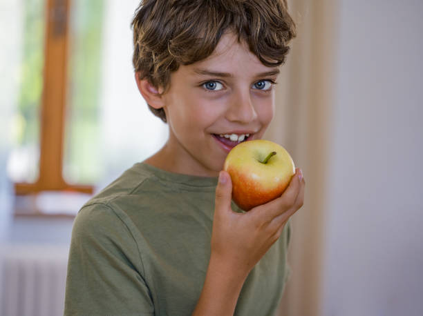
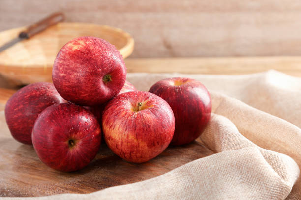

granny smith apple
High in vitamin C. Good for digestion.


The Big Apple Festival is a local festival held in various locations, with a notable one being in the town of Big Apple, New York. The festival celebrates all things related to apples, from their history and cultivation to their culinary uses. It typically features a range of activities, including apple picking, apple-themed food and drink, live entertainment, and family-friendly games.
The Big Apple Festival in Biglerville, Pennsylvania, is a vibrant celebration of all things apple, held over the first two weekends of October. This beloved festival features a delightful array of activities that cater to all ages. Visitors can enjoy the thrill of apple picking at local orchards, participate in apple-themed contests such as pie baking and recipe competitions, and explore a wide range of crafts and vendor stalls. The festival also offers an exciting lineup of live music and entertainment, alongside a diverse selection of food vendors serving up apple-inspired treats like pies and cider. Educational agricultural exhibits provide insights into apple cultivation, while children’s activities, including face painting and pumpkin patches, ensure a fun-filled experience for the whole family. With its festive atmosphere and rich array of attractions, the Big Apple Festival is a quintessential autumn event that brings the community together to celebrate the harvest season.
Apple Day, celebrated annually on October 21st, is a global event dedicated to honoring the apple and its many uses. The day serves as a celebration of this versatile fruit, showcasing its cultural, historical, and culinary significance. Observed in various communities and regions, Apple Day highlights the apple's importance in agriculture and tradition through a variety of engaging activities and events.

An "apple day" often brings communities together to celebrate the beloved fruit through various fun and educational events. Highlights might include apple picking excursions, tastings of different apple varieties, and cooking demonstrations featuring apple-based recipes. Festivals may also feature craft booths, live music, and family-friendly activities like apple bobbing and pie-eating contests. These events are typically designed to highlight the apple's versatility and significance in local culture and agriculture.
In many regions, "apple day" has cultural or seasonal importance, marking the peak of apple harvests and celebrating traditional farming practices. It serves as an opportunity to honor local apple growers and raise awareness about sustainable agriculture. By participating in these events, communities not only enjoy a day filled with fun and food but also connect with agricultural heritage and seasonal rhythms, reinforcing the apple’s role in both local culture and seasonal festivities.